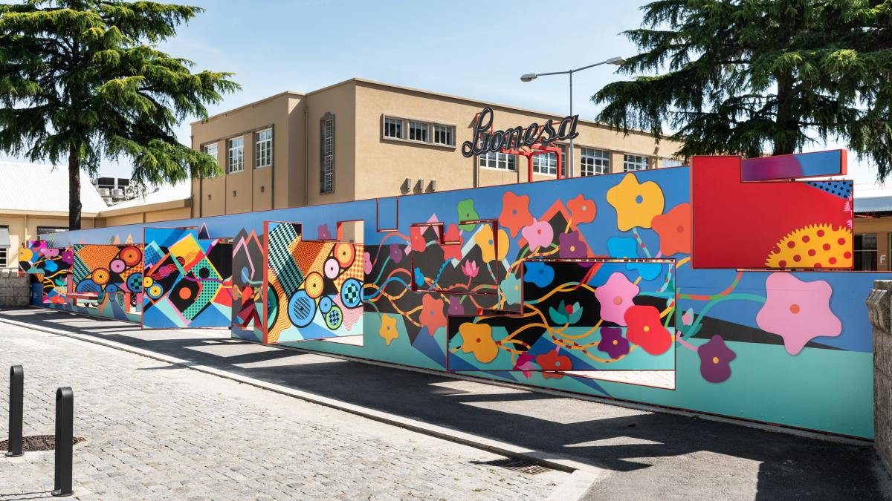

Sou aluno da ESAG estou no Curso Profissional de TGPSI
Olá, sou João Vieira, um jovem de 18 anos da encantadora Leça da Palmeira. Tenho uma paixão pela vida virtual, onde adoro jogar jogos online com amigos e me aventurar em mundos virtuais desafiadores. Minha trilha sonora diária é uma mistura eclética de músicas de todos os gêneros, que me inspiram e alimentam minha criatividade. Além disso, sou um grande fã de anime, mergulhando em histórias cativantes que exploram aspectos profundos da vida. Por outro lado, também valorizo a vida social, saindo à noite com amigos para explorar a cidade, experimentar novos restaurantes e desfrutar de conversas alegres. Este é meu espaço virtual, onde compartilho minhas paixões e reflexões. Seja bem-vindo para explorar e se conectar comigo. Agradeço por visitar e espero que encontremos interesses em comum!
Os meus interesses são como as cores da minha vida, pintando a minha jornada e moldando quem sou. Desde que me conheço, sempre fui atraído por uma grande variedade de coisas que fazem o meu coração vibrar. A tecnologia é uma das minhas paixões. Fico entusiasmado com as últimas inovações e como influenciam a forma como vivemos. É incrível pensar como a tecnologia está sempre a evoluir e a transformar o nosso mundo. Outro interesse profundo que carrego comigo é a ciência. Fico maravilhado com o desconhecido e com a forma como a ciência nos ajuda a entender o universo e a desvendar os seus segredos. No entanto, não sou apenas um apaixonado por tecnologia e ciência. Também tenho um lado artístico e sou um apreciador da música, do cinema e da literatura. A música tem o poder de tocar a minha alma, os filmes levam-me a mundos distantes e a literatura transporta-me para lugares e histórias fascinantes. Além disso, a natureza é uma fonte constante de inspiração para mim. Gosto de explorar o mundo ao ar livre, seja a fazer uma caminhada pela montanha ou apenas a relaxar à beira de um lago. A beleza da natureza é um lembrete constante de como o nosso planeta é incrível. Estes interesses não são apenas passatempos; eles fazem parte do que me torna quem sou. Guiam as minhas escolhas e atividades diárias, trazendo equilíbrio e riqueza à minha vida..
Ao longo do meu percurso profissional e académico, acumulei experiências que foram verdadeiros marcos no meu crescimento e desenvolvimento. Um desses momentos significativos foi o meu estágio profissional na FedEx, onde mergulhei de cabeça no mundo da Tecnologia da Informação (TI). Durante o estágio, tive a oportunidade de aplicar os conhecimentos teóricos que adquiri no meu curso de Tecnologias de Gestão e Programação de Sistemas de Informação (TGPSI). No ambiente desafiante e dinâmico da FedEx, enfrentei uma série de tarefas relacionadas com a gestão da infraestrutura de TI, resolução de problemas de rede e suporte técnico. A colaboração próxima com profissionais experientes foi enriquecedora e permitiu-me aprender com os melhores, aprofundando o meu conhecimento em TI. Essa experiência prática ensinou-me a importância da adaptabilidade, resolução de problemas e comunicação eficaz no mundo corporativo. Além disso, encontro-me atualmente no último ano do meu curso profissional de TGPSI, que tem sido uma jornada de aprendizagem fascinante. Durante o curso, aperfeiçoei as minhas competências em programação, administração de sistemas e segurança de redes, preparando-me para os desafios do mundo real. Esta formação sólida complementa a minha experiência prática na FedEx e capacita-me para enfrentar com confiança as complexidades do setor de TI. Estou entusiasmado por continuar a minha jornada profissional e académica, aplicando o conhecimento e as competências que adquiri para fazer contribuições significativas no campo da Tecnologia da Informação. Estas experiências têm moldado a minha trajetória e continuam a motivar-me a buscar o crescimento constante e a excelência na minha carreira.
